Your website has a simple admin area where you can add and change content yourself, with no code and no developer. This guide shows you how.
You are in control of four things:
Gallery — the photos shown on your Projects page and elsewhere on the site.
Blog — news posts and stories.
Events — upcoming events and gatherings.
Testimonials — quotes from the people you support.
Everything you add can be saved as a draft first, published when you are ready, and recovered if you delete it by mistake. This guide walks through each task with pictures.
The golden rule: nothing you type appears on the live website until you press Publish. So you can experiment freely.
About the heading: the large title at the top of an item fills in by itself from what you type. It shows Untitled only until you start. It follows the Caption for photos, the Title for blog posts and events, and the Quote for testimonials. You do not type into the heading itself — just fill in the field below it and the heading updates.
1. Logging in
Go to your website address followed by /admin. While the new site is being reviewed, that address is:
ks.gbit.au/admin
Enter your email and password (the login we set up for you).
Click Login.
This address changes at go-live. Once the new site replaces the old one, use kindsisters.org.au/admin instead. Everything else in this guide stays the same.
Forgotten password? Contact Gavin at GBIT Automation and he will reset it for you. The Forgot password? link on the login screen is not connected to email yet, so it will not send you anything.
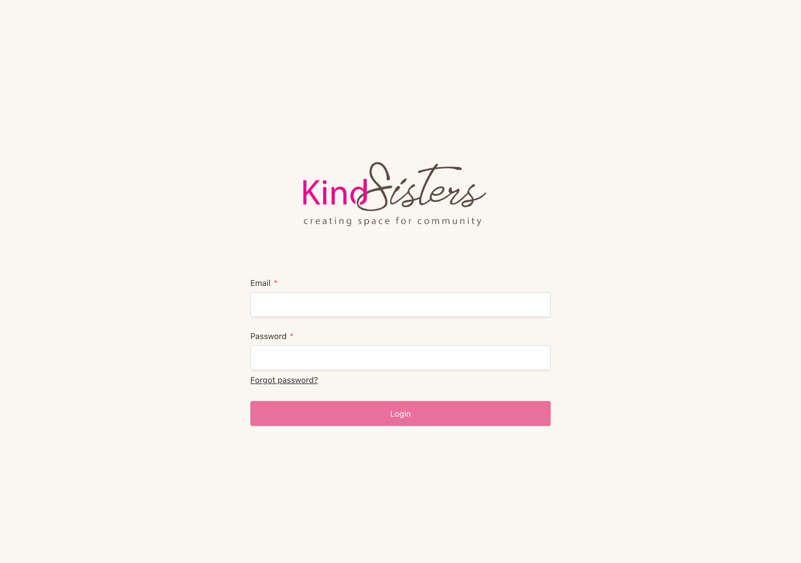
The login screen
2. The dashboard
After you log in you see the dashboard. Each card is a section you can manage. Click a card to open it. A short line under each name reminds you what it holds.
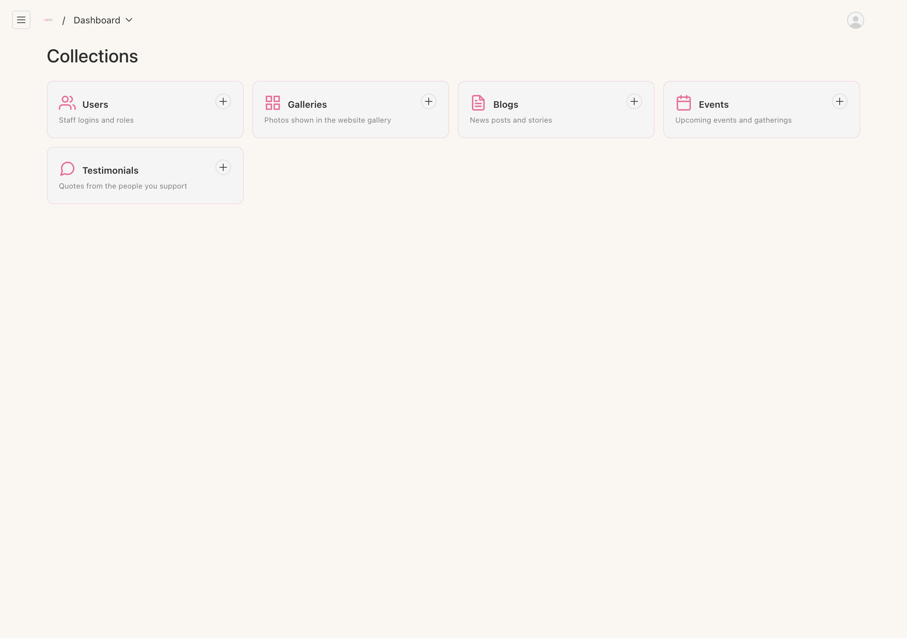
The dashboard — your four content areas, plus staff logins
3. Photo Gallery
These are the photos on your Projects page. Click Gallery on the dashboard to open it. You see all your photos in a list. Click any row to edit a photo, or click Create New to add one.
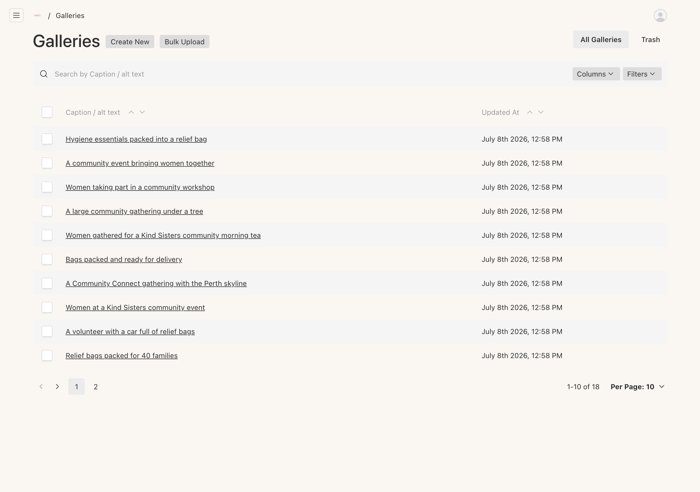
Your gallery photos — click a row to edit, or Create New to add
Add a photo
Click Create New (top right).
Drag your photo into the upload box, or click to choose a file.
Type a short caption in Caption / alt text. This describes the photo for visitors and search engines.
Click Publish. It appears in the website gallery within a minute.
Photo size: use a good-quality photo, at least 1200 pixels on the longest side. If a photo is too small, the system will let you know. Photos straight from a phone or camera are always fine.
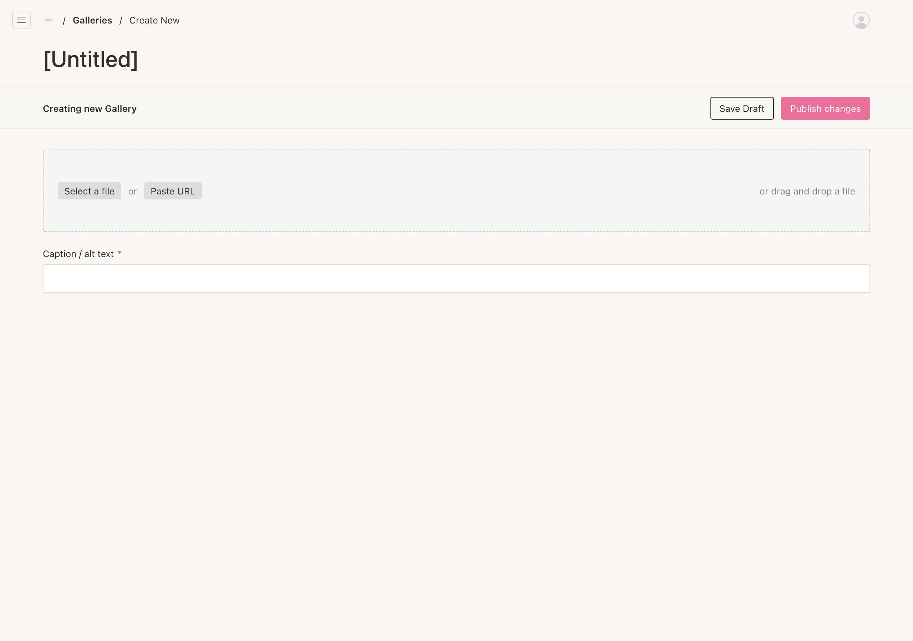
Adding a new gallery photo
4. Blog posts
Share news and stories with a full writing area.
Click Blog, then Create New.
Type a Title. The web address fills in automatically.
Add a hero image if you have one.
Write your post in the editor. You can use headings, bold, links, and lists.
Set a publish date, then click Publish.
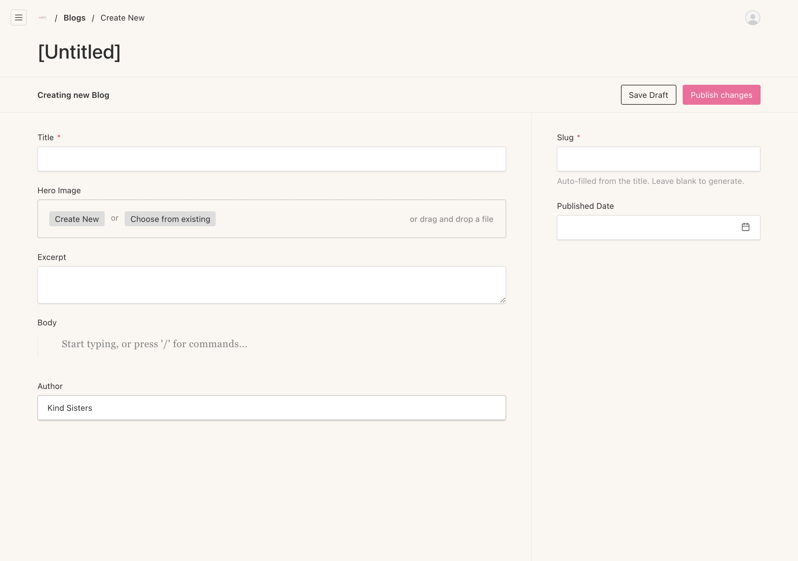
Writing a blog post
5. Events
Add upcoming events to the Events page.
Click Events, then Create New.
Enter the title, date, and location.
Add a description and an image if you have one.
Click Publish.
When there are no published events, the Events page shows a friendly "Stay tuned" message instead.
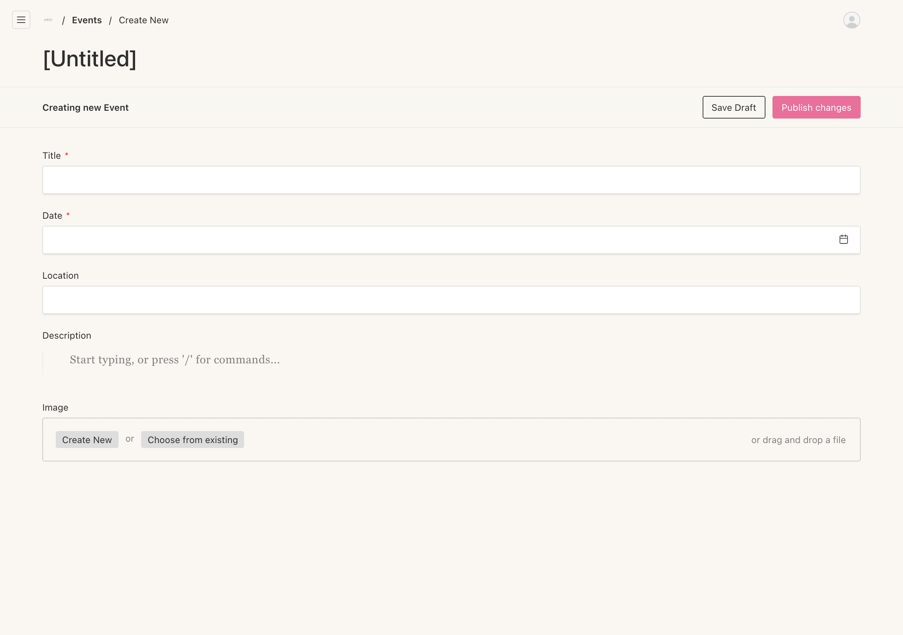
Adding an event
6. Testimonials
Quotes from families, support workers, and the community.
Click Testimonials, then Create New.
Type the quote.
Add the role of the person (for example, Parent or School Support Worker). Names are kept private.
Add a date if you like, then click Publish.
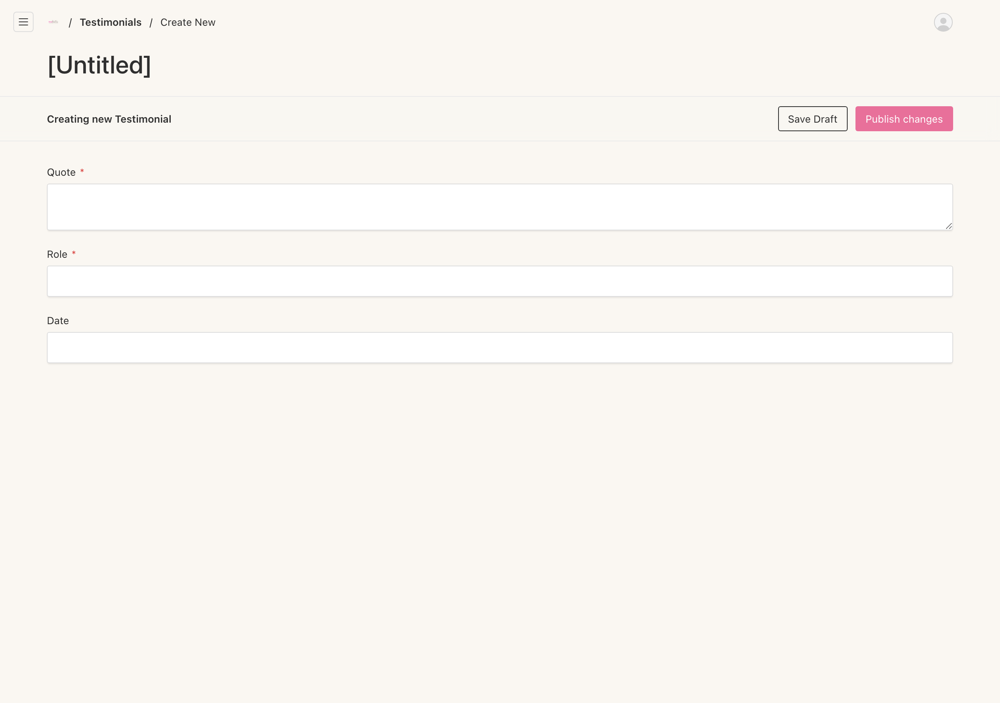
Adding a testimonial
7. Publishing and drafts
Every item has two ways to save, shown in the top right when you are editing.
Save as Draft — keeps your work private. It does not appear on the website. Come back and finish it later.
Publish — puts it live on the website within about a minute.
You can unpublish something at any time by changing it back to a draft.
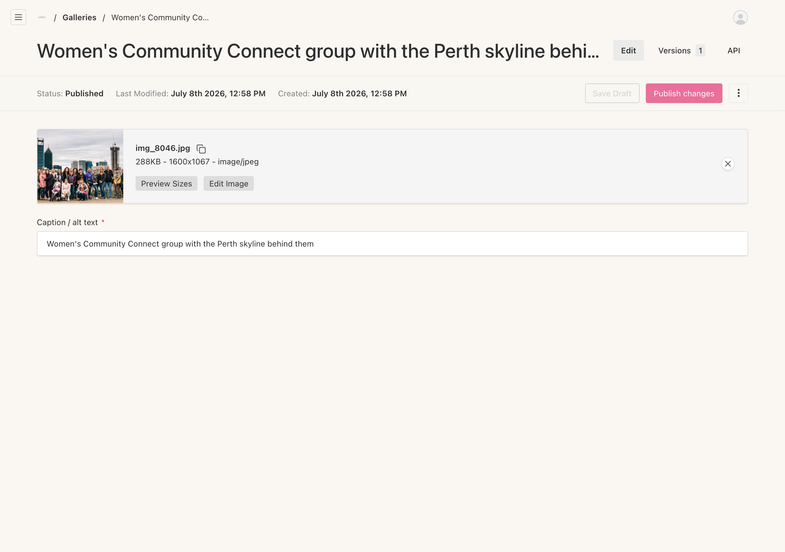
The Publish controls appear at the top right when editing
8. Deleting and restoring
Deleting is safe. Removed items go to a Trash bin, not gone for good.
Open the item, click the ⋮ menu (top right), and choose Delete.
To get it back, open the Trash view for that section, open the item, and choose Restore.
Only empty the Trash when you are sure. Emptying it removes items for good.
9. Undoing a change
Every item keeps a history of its previous versions. If you make a change you are not happy with, you can go back.
Open the item and look for its Versions history.
Pick an earlier version and choose Restore.
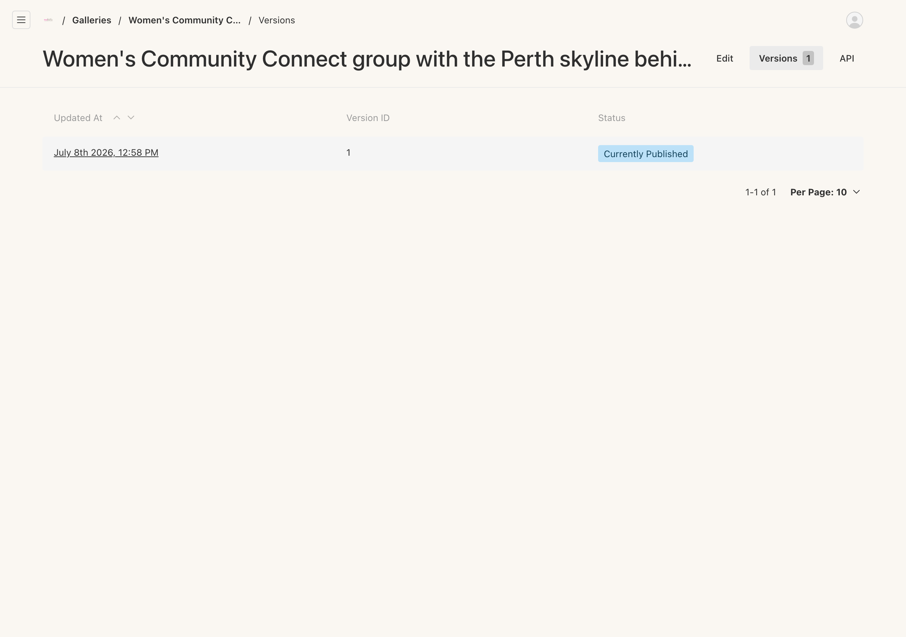
Version history — restore an earlier version any time
10. Staff logins
You can give other staff their own login. There are two levels:
Admin — full control, including managing other users. This is you.
Editor — can manage all the content (Gallery, Blog, Events, Testimonials) and change their own password, but cannot see or change anyone else's account.
Click Users on the dashboard to see your staff logins.
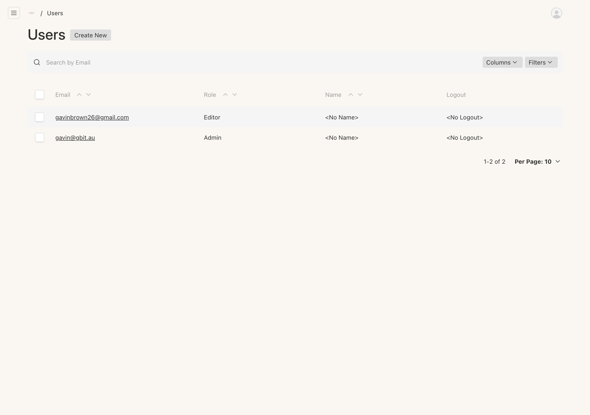
Your staff logins
Add a staff member
Click Create New (top right).
Enter their email, set a password, and choose the role Editor.
Click Save. They can now log in with their own details.
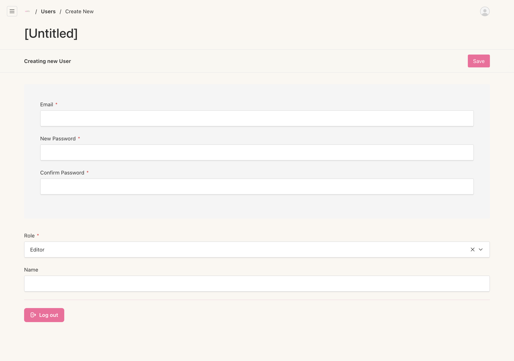
Adding an editor login
11. Your account and logging out
Your account page lets you change your own password. It also has the Log out button at the bottom.
To log out, open your account page and click Log out, or add /admin/logout to your website address.
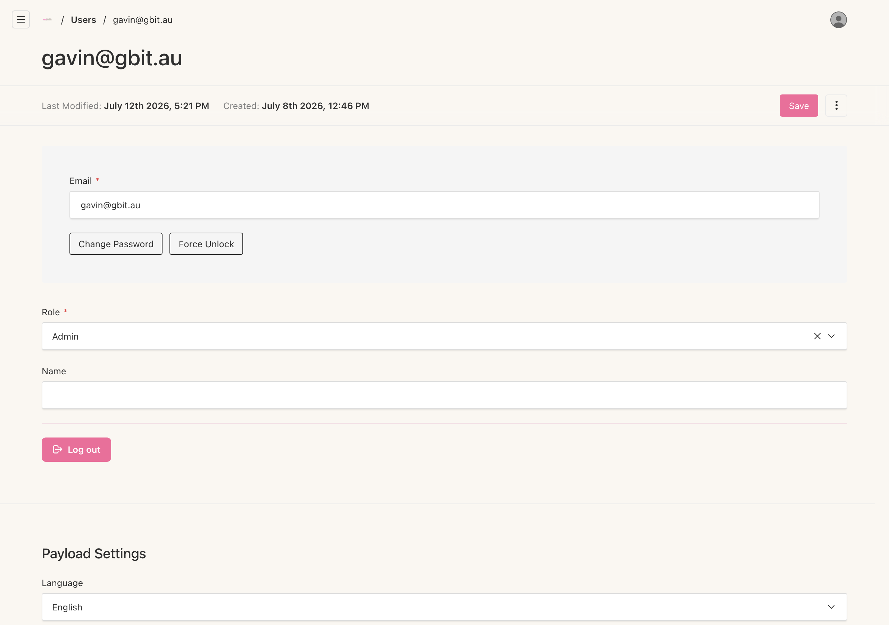
Your account page, with the Log out button
Created by
GBIT Automation
Gavin Brown, Director
info@gbitautomation.com.au
0407 155 108
gbitautomation.com.au
Building Apps • Connecting Software • Automating Processes • Digital Forms